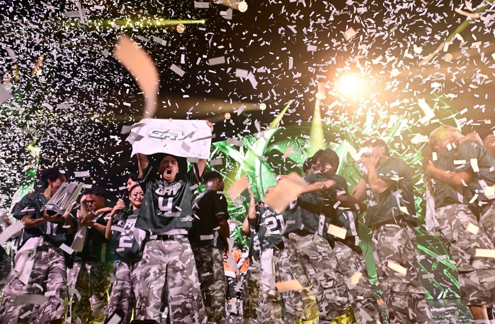

Season 02 · Ticket waitlist
2026 sold out five events. Pricing is tiered, and earlier buyers get the better tiers, so the list hears first when next-season tickets go live.
Season 02Waitlist pass
Season 02Pass issued

● ActiveYou’re on
the list.
Pass holder
When Season 02 tickets go live, this address hears first — ahead of the public on-sale.
When Season 02 tickets go live, this address hears first — ahead of the public on-sale.